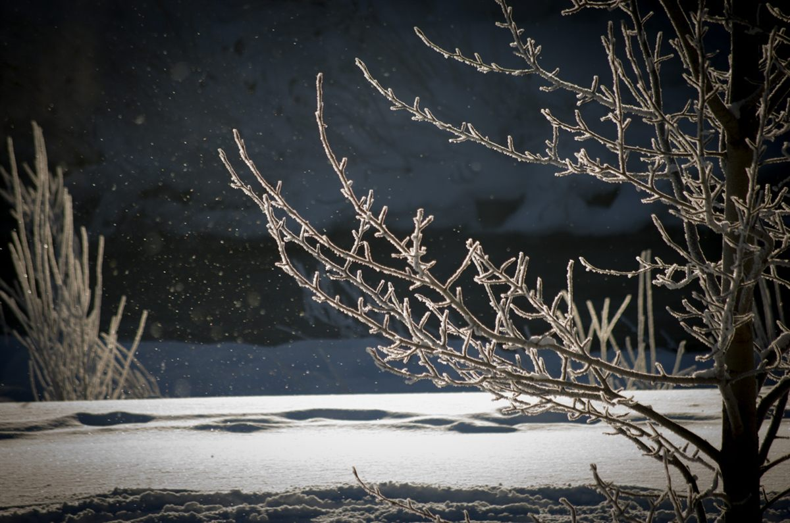

アクセス
- 住所
- 北海道旭川市花咲町7丁目4064-1
- 営業時間
- 準備中(お問い合わせください)
- 定休日
- 準備中(お問い合わせください)
- 駐車場
- 準備中(お問い合わせください)
- 最寄り交通
- 準備中(お問い合わせください)
お越しの前に、電話でお問い合わせいただくと安心です。

ご不明な点は、お電話またはInstagramからご相談ください。
写真はフリー素材のイメージです。店舗・施術の実際の様子ではありません。旭川市以外で撮影されたもの、撮影地が不明なものを含みます。
SAMPLE|試作サンプル(営業提案用イメージ)
お越しの前に、電話でお問い合わせいただくと安心です。

ご不明な点は、お電話またはInstagramからご相談ください。
写真はフリー素材のイメージです。店舗・施術の実際の様子ではありません。旭川市以外で撮影されたもの、撮影地が不明なものを含みます。